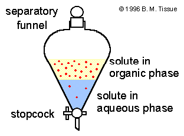
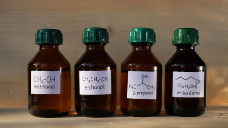
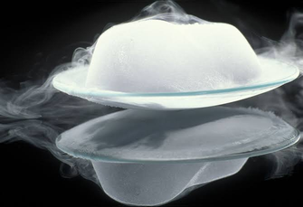

Mixture
| Vietnamese | — |
|---|---|
| English | Mixture |
| Pronunciation | /ˈmɪkstʃər/ |
| Word type | noun (as labelled in the PDFs) |
Topic 2 — Meaning (Vietnamese)
Not separately specified in the PDF transcription.
Meaning (English)
Là sự kết hợp của hai hay nhiều chất không phản ứng hóa học với nhau./ A combination of two or more substances that do not chemically react with one another.
Example
In the laboratory, the students separated the sand and iron filings from the solid mixture using a magnet.
Images from the PDFs








